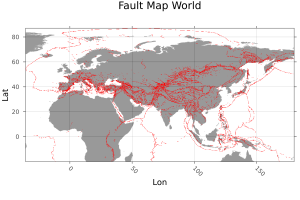
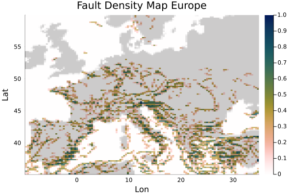

Fault Density Map
Goal
In this tutorial, Fault Data is loaded as Shapefiles, which is then transformed to raster data. With the help of that a fault density map of Europe is created.
1. Load Data
Load packages:
using GeophysicalModelGenerator, Shapefile, Plots, Rasters, GeoDatasets, InterpolationsData is taken from "Active Faults of Eurasia Database AFEAD v2022" DOI:10.13140/RG.2.2.25509.58084 You need to download it manually (as it doesn't seem to work automatically), and can load the following file:
File = "AFEAD_v2022/AFEAD_v2022.shp"Load data using the Shapefile package:
table = Shapefile.Table(File)
geoms = Shapefile.shapes(table)
CONF = table.CONFRaster the shapefile data
ind = findall((table.CONF .== "A") .| (table.CONF .== "B") .| (table.CONF .== "C"))
faults = Shapefile.Handle(File).shapes[ind]
faults = rasterize(last,faults; res=(0.12,0.12), missingval=0, fill=1, atol = 0.4, shape=:line)
lon = faults.dims[1]
lat = faults.dims[2]Download coastlines with GeoDatasets:
lonC,latC,dataC = GeoDatasets.landseamask(;resolution='l',grid=10)Interpolate to fault grid
itp = linear_interpolation((lonC, latC), dataC)
coastlines = itp[lon.val,lat.val]
coastlines = map(y -> y > 1 ? 1 : y, coastlines)Plot the fault data
heatmap(lon.val,lat.val,coastlines',legend=false,colormap=cgrad(:gray1,rev=true),alpha=0.4);
plot!(faults; color=:red,legend = false,title="Fault Map World",ylabel="Lat",xlabel="Lon")
Restrict area to Europe
indlat = findall((lat .> 35) .& (lat .< 60))
Lat = lat[indlat]
indlon = findall((lon .> -10) .& (lon .< 35))
Lon = lon[indlon]
data = faults.data[indlon,indlat]Create GeoData from restricted data
Lon3D,Lat3D, Faults = lonlatdepth_grid(Lon,Lat,0);
Faults[:,:,1] = data
Data_Faults = GeoData(Lon3D,Lat3D,Faults,(Faults=Faults,))2. Create Density Map
Create a density map of the fault data. This is done with the countmap function. This function takes a specified field of a 2D GeoData struct and counts the entries in all control areas which are defined by steplon (number of control areas in lon direction) and steplat (number of control areas in lat direction). The field should only consist of 0.0 and 1.0 and the steplength. The final result is normalized by the highest count.
steplon = 188
steplat = 104
cntmap = countmap(Data_Faults,"Faults",steplon,steplat)Plot the density map with coastlines
lon = unique(cntmap.lon.val)
lat = unique(cntmap.lat.val)
coastlinesEurope = itp[lon,lat]
coastlinesEurope = map(y -> y > 1 ? 1 : y, coastlinesEurope)Plot this using Plots.jl:
heatmap(lon,lat,coastlinesEurope',colormap=cgrad(:gray1,rev=true),alpha=1.0);
heatmap!(lon,lat,cntmap.fields.countmap[:,:,1]',colormap=cgrad(:batlowW,rev=true),alpha = 0.8,legend=true,title="Fault Density Map Europe",ylabel="Lat",xlabel="Lon")
This page was generated using Literate.jl.